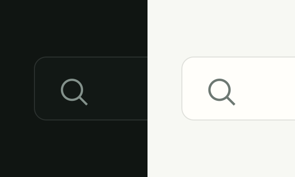
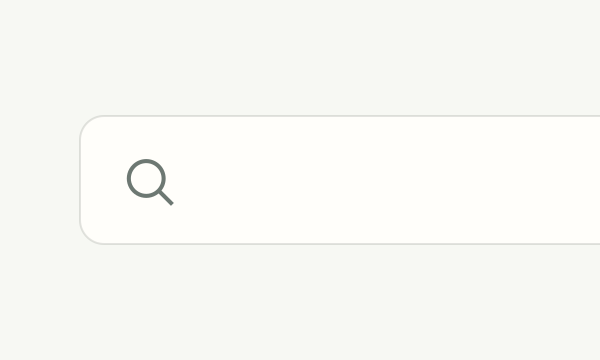
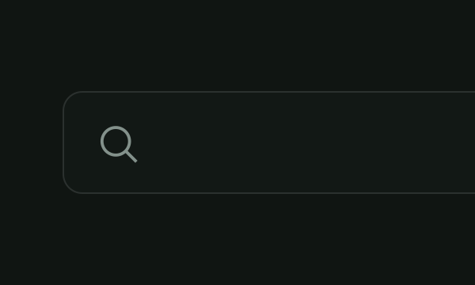

Personalize Wayleaf and manage sync and theme preferences.



Set the default search entry for regular keywords
For regular keywords, Wayleaf uses the basic search marked as default.
Edit built-in AI engine names, triggers, and search links
Separate triggers with spaces or commas, for example /gpt /chatgpt.
Use built-in *-prefixed activators to open common platform search results
Type a complete * activator, such as *yt or *youtube, to switch platform search. For overlapping activators such as *x and *xhs, press Space or Enter to confirm *x. Sign in first where required.
Open compatible HTML5 video in Picture-in-Picture.
First run · 1 / 5
Enter a keyword, URL, or AI command in the main search bar.